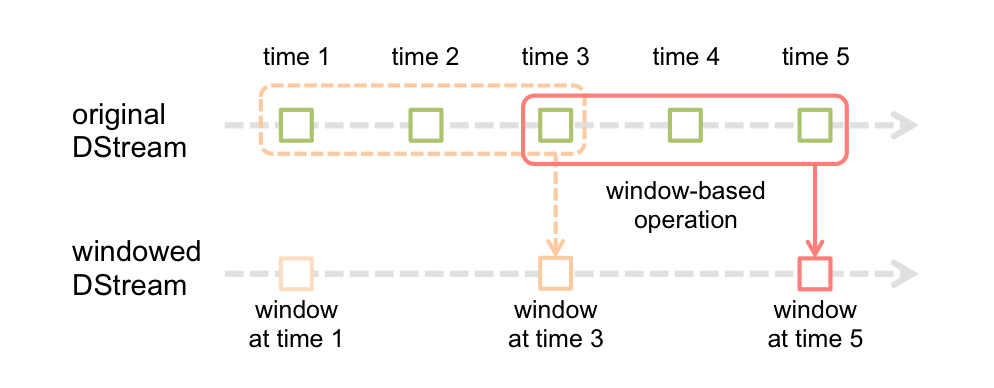

There are plenty of examples and data that you can test at https://github.com/apache/spark . We will comment here on Spark Streaming, Machine Learning and Graph processing in the context of PySpark.
Spark Streaming enables high-throughput stream processing of live data streams. Data can be ingested from TCP sockets. Continuous streams are discretized into DStreams, which is internally represented as a sequence of RDDs. Text files can also be read as streams, which can allow programs to automatically adapt to local data sources.
Discretization can be expanded over a sliding window of time periods, so that RDDs that fall within the window are combined into a windowed DStream.

Streams can also be joined. This may be useful for providing a seamless data feed when multiple sources are available (think IOT). Example:
joinedStream = windowedStream.transform(lambda rdd: rdd.join(dataset))
More details: https://spark.apache.org/docs/latest/streaming-programming-guide.html
MLlib's APIs cover algorithms for classification, regression, clustering, dimensionality reduction, linear algebra and basic statistics. More details: https://spark.apache.org/docs/latest/ml-guide.html
Lets consider an application of binary classification. The code we will use is here:
https://github.com/apache/spark/blob/master/examples/src/main/python/mllib/svm_with_sgd_example.py , modified for style and data paths:
if __name__ == "__main__":
sc = SparkContext(appName="PythonSVMWithSGDExample")
# Load and parse the data
def parsePoint(line):
values = [float(x) for x in line.split(' ')]
return LabeledPoint(values[0], values[1:])
data = sc.textFile("data/sample_svm_data.txt")
parsedData = data.map(parsePoint)
# Build the model
model = SVMWithSGD.train(parsedData, iterations=100)
# Evaluating the model on training data
labelsAndPreds = parsedData.map(lambda p: (p.label, model.predict(p.features)))
trainErr = labelsAndPreds.filter(lambda lp: lp[0] != lp[1]).count() float(parsedData.count())
print("Training Error = " + str(trainErr))
# Save and load model
model.save(sc, "tmp/pythonSVMWithSGDModel")
sameModel = SVMModel.load(sc, "tmp/pythonSVMWithSGDModel")
Some data we will test is here:
https://github.com/apache/spark/blob/master/data/mllib/sample_svm_data.txt
Binary classification divides data into two categories: positive and negative. This could reflect any number of states such as up/down, on/off, true/false, yes/no, etc (MLib denotes positive as 1 and negative as 0).
Classification can be done by Support Vector Machine (SVM) or logistic Regression. The example uses the former. An SVM separates data points into classes by a hyperplane. During training, the best hyperplane is sought with a certain maximum margin of distance from the hyperplane in separating the classes.
When run, a model is generated that has a certain training error. (For the given data, the training error is Training Error = 0.38198757764 )
The premiere graphing program in Apache Spark is GraphX. However, GraphX is not compatible with PySpark at this time. An alternative project called GraphFrames provides a wrapper to GraphX objects by using Spark's DataFrames API. However, Spark 2x is not quickly compatible with GraphFrames either. A work around is to use the Networkx library for graph processing, converting graph data to RDDs. Another possibility for parallelization of graphs in Python/Networkx is a platform called Parallel Python: https://www.parallelpython.com